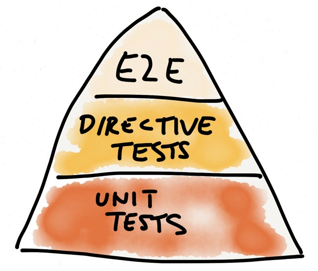

angular.module('app.mathService', [])
.service('mathService', function() {
this.add = function(a, b) {
return a + b;
};
});
describe('mathService', function () {
var mathService;
beforeEach(function () {
module('app.mathService');
inject(function (_mathService_) {
mathService = _mathService_;
});
});
describe('add()', function() {
it('adds two numbers', function() {
expect(mathService.add(2, 3)).toEqual(5);
});
});
});
angular.module('app.itemService', [])
.service('itemService', function(validatorService) {
this.update = function(item) {
if (validatorService.isValid(item)) {
// Update item
return true;
} else {
return false;
}
};
});
describe('itemService', function () {
var itemService, isValid;
beforeEach(function () {
module('app.itemService', function($provide) {
$provide.constant('validatorService', {
isValid: function() { return isValid; }
});
});
inject(function (_itemService_) {
itemService = _itemService_;
});
isValid = false;
});
});
// $provide.constant('itemService', {
// isValid: function() { return isValid; }
// });
describe('update()', function() {
it('updates when validation is passed', function() {
isValid = true;
expect(itemService.update({})).toBeTruthy();
});
it('does not update when validation fails', function() {
isValid = false;
expect(itemService.update({})).toBeFalsy();
});
});
angular.module('app.itemService', [])
.service('itemService', function(validatorService) {
this.update = function(item) {
if (validatorService.isValid(item)) {
// Update item
return true;
} else {
return false;
}
};
});
describe('itemService', function () {
var itemService, validatorService;
beforeEach(function () {
module('app.itemService');
inject(function (_itemService_, _validatorService_) {
itemService = _itemService_;
validatorService = _validatorService_;
});
});
});
describe('update()', function() {
var item = {};
it('updates when validation is passed', function() {
spyOn(validatorService, 'isValid').and.returnValue(true);
expect(validatorService.isValid).toHaveBeenCalledWith(item);
expect(itemService.update(item)).toBeTruthy();
});
it('does not update when validation fails', function() {
spyOn(validatorService, 'isValid').and.returnValue(false);
expect(validatorService.isValid).toHaveBeenCalledWith(item);
expect(itemService.update(item)).toBeFalsy();
});
});
angular.module('app.incrementer', []).
.directive('incrementer', function() {
return {
restrict: 'E',
scope: {
item: '='
},
template: '',
link: function(scope) {
scope.increment = function() {
item.count = item.count + 1;
}
}
};
});
describe('incrementer', function () {
var element, scope, item = {};
beforeEach(function () {
item.count = 0;
module('app.incrementer');
inject(function ($compile, $rootScope) {
var $scope = $rootScope.$new();
$scope.item = item;
template = '
it('calls increment on click', function () {
spyOn(scope, 'increment');
element.find('button').click();
expect(scope.increment).toHaveBeenCalled();
});
describe('increment()', function() {
it('increments the item\'s count property', function() {
expect(item.count).toEqual(0);
scope.increment();
expect(item.count).toEqual(1);
});
});
describe('E2E Test', function () {
beforeEach(function () {
browser().navigateTo('http://localhost/url/to/test/index.html');
});
it("should show a dialog", function () {
element('.show-dialog').click();
expect(element(".dialog").count()).toBe(1);
});
});